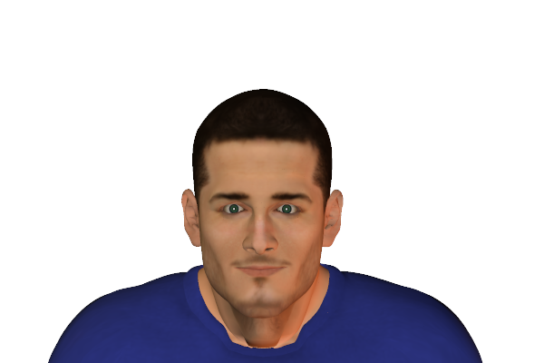
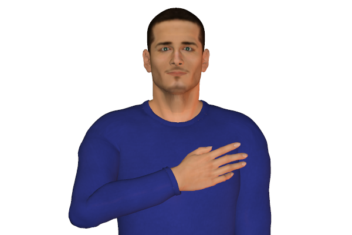

Bookmark added
-
head nodding
 agreementHead nodding occurs as a response while listening. It also indicates agreement
agreementHead nodding occurs as a response while listening. It also indicates agreement -
slow head nodding
 attentive listeningSlow nodding can be faked as well. One has to be careful to validate this sign. It can be interpreted as agreement.
attentive listeningSlow nodding can be faked as well. One has to be careful to validate this sign. It can be interpreted as agreement. -
head forward, uprightinterest, positive reactionLeaning towards the front indicates interest. Generally the forward leaning of the upper body commonly while sitting.
-
hand(s) on heart (left side of chest)seeking to be believedThe sender of this gesture uses this to convince anyone about his innocence or truthfulness.
-
thumb(s) up
 positive approval, agreement, all wellThis signals a positive gesture. It generally is in agreement to what has been indicated.
positive approval, agreement, all wellThis signals a positive gesture. It generally is in agreement to what has been indicated. -
tongue pokedisapproval, rejectionExtending the tongue out of the mouth with a slight wrinkling of the nose idicates disapproval. There may be a slight squint of the eyes as well
-
head tilted downwardcriticism, admonishmentUsually an authoritative person would tilt the head downwards towards a person. It indicates criticism or disapproval.
-
head shaking
 disagreementShaking the head sideways indicates disapproval. But it can also signal frustration.
disagreementShaking the head sideways indicates disapproval. But it can also signal frustration. -
pronounced head shakingstrong disagreementThe strength of the movement of the head generally associates to the intensity of the feeling. The stronger the head shakes the more the person dis agrees.
-
thumbs downdisapproval, failureThis signals a negative gesture . It generally indicates if something has failed or if is in disagreement with.
-
pinching bridge of nose
 negative evaluationThis is kind of a gesture is usually understood as a negative gesture.
negative evaluationThis is kind of a gesture is usually understood as a negative gesture. -
hands clamped on earsrejection of or resistance to somethingA gesture where the person is reluctant to hear or is rejecting to the whole situation. It indicates that the other views to the person are not needed or would be ignored.
-
neck scratching
 doubt, disbeliefThis signal usually indicates the person is doubting or distrusting what is being said.
doubt, disbeliefThis signal usually indicates the person is doubting or distrusting what is being said.